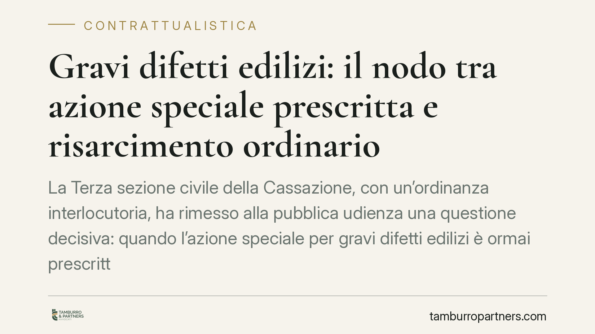

Gravi difetti edilizi: il nodo tra azione speciale prescritta e risarcimento ordinario
La Terza sezione civile della Cassazione, con un'ordinanza interlocutoria, ha rimesso alla pubblica udienza una questione decisiva: quando l'azione speciale per gravi difetti edilizi è ormai prescritta, il committente può ancora agire con l'ordinaria azione aquiliana? Il tema tocca chi ha acquistato o ristrutturato un immobile e scopre i difetti troppo tardi.

Il caso
Una proprietaria conviene in giudizio l'impresa costruttrice e il direttore dei lavori per gravi difetti dell'immobile. Dopo i gradi di merito davanti al Tribunale di Teramo e alla Corte d'Appello dell'Aquila, la controversia approda in Cassazione.
Il punto critico è noto a chi opera nel settore: l'azione speciale prevista per i gravi difetti era ormai prescritta. La domanda allora diventa un'altra. Il committente può ripiegare sull'azione risarcitoria ordinaria, quella prevista in via generale per il fatto illecito?
La Terza sezione civile, rilevando un contrasto interpretativo, ha preferito non decidere con ordinanza e ha rimesso la questione alla pubblica udienza. È una scelta che segnala quanto il tema sia aperto.
Inquadramento normativo
L'art. 1669 del codice civile disciplina la responsabilità dell'appaltatore per rovina e gravi difetti dell'opera destinata a lunga durata, entro dieci anni dal compimento. La norma prevede due termini distinti, che è essenziale non confondere:
- decadenza: la denuncia dei difetti deve avvenire entro un anno dalla scoperta;
- prescrizione: l'azione in giudizio deve essere proposta entro un anno dalla denuncia.
Sono scansioni autonome. Si può denunciare tempestivamente e poi perdere comunque il diritto, perché l'azione non è stata esercitata nell'anno successivo.
Sul piano della natura giuridica, le Sezioni Unite (sentenza n. 7756 del 2014) hanno qualificato la responsabilità ex art. 1669 c.c. come responsabilità extracontrattuale di ordine pubblico, posta a tutela dell'incolumità e della stabilità degli edifici, non del solo interesse del committente.
Proprio questa qualificazione alimenta il dubbio. Se la responsabilità per gravi difetti ha già natura aquiliana, è possibile recuperare per altra via l'art. 2043 del codice civile — la clausola generale del risarcimento per fatto illecito — quando lo strumento speciale è ormai esaurito? Un indirizzo più recente della stessa Corte ha offerto spunti non del tutto allineati, ed è su questo contrasto che la Terza sezione ha ritenuto necessaria la pubblica udienza.
Implicazioni pratiche
La posta in gioco è concreta. Se si ammette il ricorso all'art. 2043 c.c. quando l'azione speciale è prescritta, il committente guadagna uno spazio di tutela ulteriore, con un termine di prescrizione più ampio (cinque anni dal fatto, secondo le regole generali dell'illecito).
Se invece si nega questa possibilità, la disciplina speciale dei gravi difetti opera come perimetro chiuso: scaduti i suoi termini, la pretesa risarcitoria si chiude con essa.
Gli interessi in campo sono opposti e vanno letti con chiarezza:
- il committente o acquirente ha interesse a mantenere aperta ogni via risarcitoria, soprattutto quando il difetto emerge a distanza di tempo;
- l'impresa costruttrice, il direttore dei lavori e le rispettive assicurazioni hanno interesse a che i termini brevi dell'azione speciale non siano aggirati tramite la clausola generale.
Va detto con onestà: oggi non c'è una risposta definitiva. La questione è rimessa alla pubblica udienza e l'esito non è scontato. Chi si trova in una vertenza di questo tipo deve ragionare sull'incertezza, non su una regola consolidata.
Cosa fare in concreto
- Documenta subito la scoperta del difetto. Annota data e modalità: da quel momento decorre l'anno per la denuncia. La prova della tempestività è spesso decisiva.
- Denuncia per iscritto e con data certa. Utilizza raccomandata o PEC indirizzata a impresa e, se del caso, al direttore dei lavori. La denuncia verbale è un rischio inutile.
- Non attendere oltre l'anno dalla denuncia per agire. Il termine di prescrizione dell'azione speciale è breve: valutare l'avvio del giudizio con anticipo evita la decadenza di fatto.
- Fai redigere una perizia tecnica. La qualificazione come "grave difetto" incide sull'intera strategia e va ancorata a dati tecnici verificabili.
- Valuta per tempo le vie alternative. Se i termini speciali sono a rischio, è opportuno analizzare con un legale la praticabilità di altri fondamenti risarcitori, tenendo conto dell'orientamento che la Cassazione assumerà in pubblica udienza.
Consigliamo di sottoporre ogni caso a una valutazione individuale: la tempistica dei termini è la variabile che, in questa materia, decide più di ogni altra.
Contributo informativo a cura di Tamburro & Partners Avvocati - Avv. Giuseppe Tamburro. Non costituisce parere legale.
Ogni contratto ha il suo equilibrio.
Se vuoi una revisione delle clausole o una redazione su misura, scrivi allo studio. Ti rispondiamo entro un giorno lavorativo.